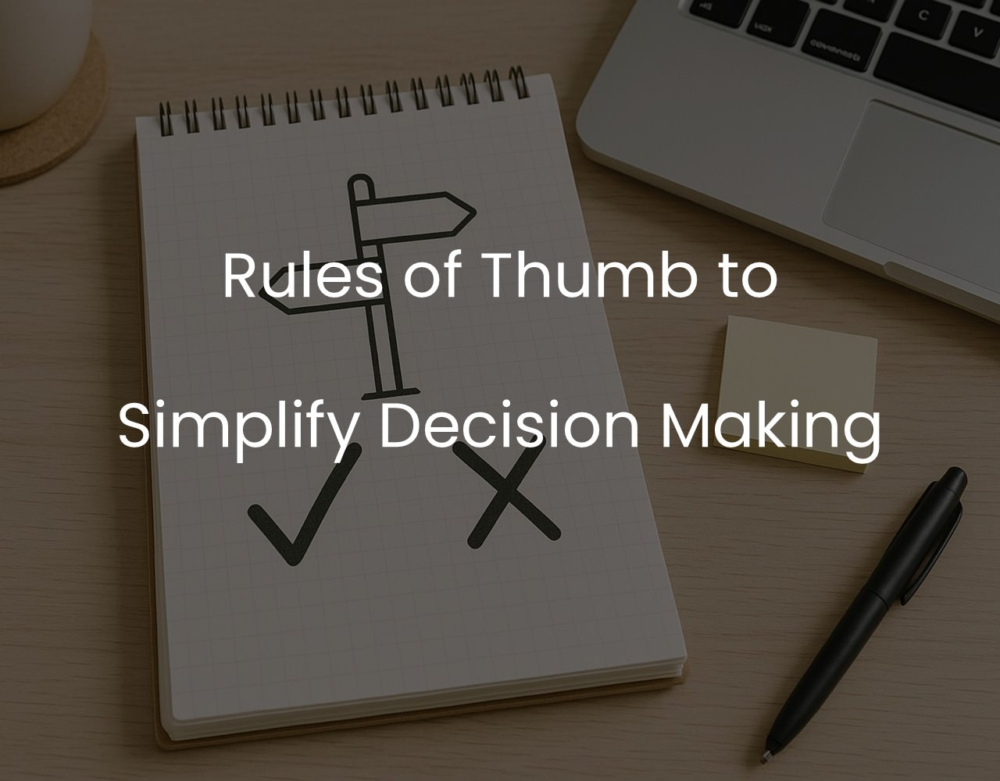

Rules of Thumb to Simplify Decision Making
A collection of practical mental models and decision-making “razors” from Sahil Bloom’s X thread, structured in a table for quick reference and guidance in complex situations.

Useful rules of thumb (razors) collected and structured as a table for easy access from Sahil Bloom’s X thread. Use them for guidance in situations where you need to make decisions.
| Title | Usage | Details |
| Feynman Razor | Understanding Concepts | Complexity and jargon are used to mask a lack of deep understanding. If you can’t explain it to a 5-year-old, you don’t really understand it. If someone uses a lot of complexity and jargon to explain something, they probably don’t understand it. |
| Luck Razor | Choose between two paths | When choosing between two paths, choose the path that has a larger luck surface area. Your actions put you in a position where luck is more likely to strike. It’s hard to get lucky watching TV at home—it’s easy to get lucky when you’re engaging and learning. |
| Arena Razor | Choose between two paths | When faced with two paths, choose the path that puts you in the arena. It's easy to throw rocks from the sidelines. It's scary and lonely in the arena—but it's where growth happens. Once you're in the arena, never take advice from people on the sidelines. |
| Optimist Razor | Choosing people | When choosing who to spend time with, prioritize spending more time with optimists. Pessimists see closed doors. Optimists see open doors—and probably kick down the closed doors along the way. Remember: Pessimists sound smart, optimists get rich. |
| Gratitude Razor | Show Appreciation | When in doubt, choose to show MORE gratitude to the people who have mentored or supported you. Say thank you more. Tell someone you appreciate them. Not just on special occasions—every single day. Lean into gratitude daily and your life will improve. |
| New Project Razor | Decide on a project | When deciding whether to take on a new project: First, ask yourself if it's a "hell yes!" opportunity. If not, say no. If it is, imagine that it's going to take 2x as long and be 1/2 as profitable as you expect. If you still want to do it, say yes. |
| Uphill Decision Razor | Choose between two options | When faced with two options, choose the one that’s more difficult in the short-term. This is a forced override of your pain avoidance instinct. It's worth it - short-term pain creates compounding long-term gain. |
| Invested vs Spent Test | Where to spend your time | Time is either *invested* or *spent*. Invested time—actions that compound. Spent time—actions that don’t. When choosing what to do, prioritize investing time, not spending it. Invested Time: Reading, Physical activity, Mindfulness, Relationship building |
| The Rooms Razor | Choose between which rooms to enter | If you have a choice between entering two rooms, choose the room where you're more likely to be the dumbest one in the room. Once you're in the room, talk less and listen more. Bad for your ego—great for your growth. |
| Occam’s Razor | Understanding Something | When you're weighing alternative explanations for something, the one with the fewest necessary assumptions should be chosen. Put simply, the simplest explanation is often the best one. Simple Assumptions > Complex Assumptions. Simple is beautiful. |
| Listen Mode | Learn to Listen | If you encounter someone with opinions or perspectives very different from your own, listen twice as much as you speak. Our natural tendency when we hear a view we disagree with is to respond and refute it. Default to Listen Mode. You'll learn way more that way. |
| Lion Razor | How to work | If you have the choice, always choose to sprint and then rest. Most people are not wired to work 9-5 - long periods of steady, monotonous work. If your goal is to do inspired, creative work, you have to work like a lion. Sprint when inspired. Rest. Repeat. |
| Smart Friends Razor | Looking to the future | If your smartest friends are all interested in something, it’s worth paying attention to. If that something seems crazy, it's worth paying a lot of attention to. The passions of the smartest people in your circles are a looking glass into the future. |
| The Young & Old Test | Deciding on what to do | Make decisions that your 80-year old self and 10-year-old self would be proud of. Your 80-year-old self cares about the long-term compounding of the decisions of today. Your 10-year-old self reminds you to stay foolish and have some fun along the way. |
| The Duck Test | Observing | If it looks like a duck, swims like a duck, and quacks like a duck, it’s probably a duck. You can determine a lot about a person by observing their habitual actions and characteristics. When someone tells you who they are, believe them the first time. |
| Hanlon’s Razor | Assessing someone’s actions | Never attribute to malice that which can be adequately explained by stupidity. In assessing someone's actions, we shouldn't assume negative intent if there's a viable alternative explanation - different beliefs, lack of intelligence, incompetence, or ignorance. |
| Hitchens’ Razor | Rejecting Knowledge Claims | Anything asserted without evidence can be dismissed without evidence. If something cannot be settled by reasonable experiment or observation, it's not worth debating. *These will save you from wasting time on pointless arguments! * |
| The Opinion Razor | On Opinions | Opinions are earned—not owed. If you can't state the opposition's argument clearly, you haven't earned an opinion. "I never allow myself to have an opinion on anything that I don’t know the other side’s argument better than they do." - Charlie Munger |
| The Writing Knife Block | Write and study to fill knowledge gaps | If you're struggling to understand something, try writing it out. When you write, you expose the gaps that exist in your logic and thinking. Study to fill the gaps. Writing is the ultimate tool to sharpen thinking--use it as a "knife block" for life. |
| Taleb’s “Look the Part” Test | Choosing between two options | If forced to choose between two options of seemingly equal merit, choose the one that doesn’t look the part. The one who doesn’t look the part has had to overcome much more to achieve its status than the one who fit in perfectly. |
| The Braggers Razor | On Bragging | Truly successful people rarely feel the need to brag about their success. If someone regularly brags about their wealth or success, it's fair to assume the reality is likely a small fraction of what they claim. |
| The Reading Razor | On Reading | When deciding what to read, just read whatever grabs you. When it stops grabbing you, put it down. Avoid the trap of only reading “impressive" books that bore you to death. Never establish reading vanity metrics as goals. |
| The Stress-Reward Test | On Stress | Too many people take on stress that has no upside. If something is going to be stressful, consider whether the reward is sufficiently outsized to justify the stress. If it isn't, don't take it on. |
References
[1] Sahil Bloom | Frameworks provide clarity in complex situations